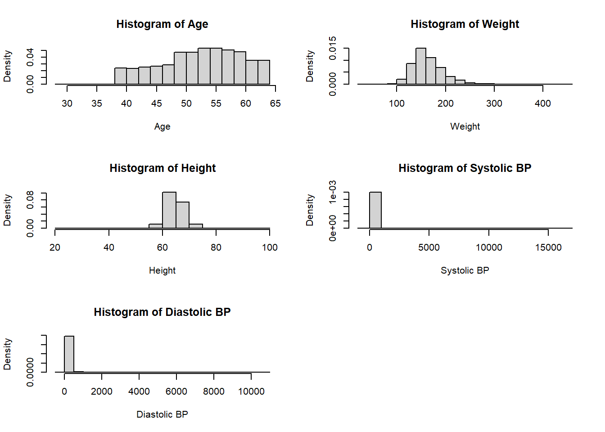
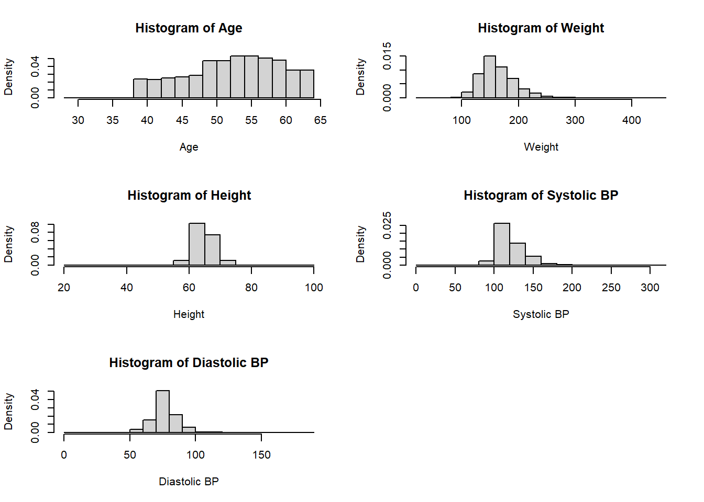
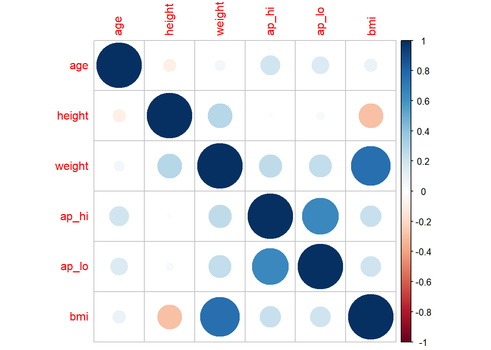

The Diabetes Risk Dataset contains 70,000 rows and 14 columns. The columns included a unique member ID (member_ID) number, age, height, weight, gender, systolic blood pressure (ap_hi), diastolic blood pressure (ap_lo), cholesterol, glucose (gluc), smoking (smoke), alcohol intake (alco), physical activity (active), body mass index (bmi) and at high risk of diabetes or not (diabetes). 6 of the potential predictor variables are categorical gender, cholesterol, glucose, smoke, alco and active, (along with the categorical response variable).
Upon visual inspection of the data, the first issue seemed to be the presence of missing values in the cholesterol column. After loading in the data variables were adjusted to their type of variable mentioned in the data dictionary. To allow for easier intepretation of the predictors in the case of day, height and gender the variables were adjusted to non-metric variables. Age is changed from days to year, height is changed from cm to inches and weight is changed from kilograms to pounds.
#Data Preparation
diabetes_risk <- fread("data/diabetes_risk_data.csv") %>% rename(member_id = 1) %>% mutate(gender = recode(
gender,
"Male" = 0,
"Female" = 1), gluc = na_if(gluc, 0)) %>% mutate(diabetes = as.factor(diabetes), gender = as.factor(gender), cholesterol = as.factor(cholesterol), gluc = as.factor(gluc), smoke = as.factor(smoke), active = as.factor(active), alco = as.factor(alco), age = as.integer(age/365), height = height/2.54, weight = weight*2.20462)knitr::kable(summary(diabetes_risk[,-1]))| age | gender | height | weight | ap_hi | ap_lo | cholesterol | gluc | smoke | alco | active | diabetes | bmi | |
|---|---|---|---|---|---|---|---|---|---|---|---|---|---|
| Min. :29.00 | 0:45530 | Min. :21.65 | Min. : 22.05 | Min. : -150.0 | Min. : -70.00 | 1 :47095 | 1 :59475 | 0:63831 | 0:66236 | 0:13739 | 0:35021 | Min. : 3.472 | |
| 1st Qu.:48.00 | 1:24470 | 1st Qu.:62.60 | 1st Qu.:143.30 | 1st Qu.: 120.0 | 1st Qu.: 80.00 | 2 : 8632 | 2 : 5190 | 1: 6169 | 1: 3764 | 1:56261 | 1:34979 | 1st Qu.: 23.875 | |
| Median :53.00 | NA | Median :64.96 | Median :158.73 | Median : 120.0 | Median : 80.00 | 3 : 7273 | 3 : 5330 | NA | NA | NA | NA | Median : 26.374 | |
| Mean :52.84 | NA | Mean :64.71 | Mean :163.60 | Mean : 128.8 | Mean : 96.63 | NA’s: 7000 | NA’s: 5 | NA | NA | NA | NA | Mean : 27.557 | |
| 3rd Qu.:58.00 | NA | 3rd Qu.:66.93 | 3rd Qu.:180.78 | 3rd Qu.: 140.0 | 3rd Qu.: 90.00 | NA | NA | NA | NA | NA | NA | 3rd Qu.: 30.222 | |
| Max. :64.00 | NA | Max. :98.43 | Max. :440.92 | Max. :16020.0 | Max. :11000.00 | NA | NA | NA | NA | NA | NA | Max. :298.667 |
par(mfrow=c(3,2))
hist(diabetes_risk$age, main = "Histogram of Age", xlab = "Age", freq = FALSE)
hist(diabetes_risk$weight, main = "Histogram of Weight", xlab = "Weight", freq = FALSE)
hist(diabetes_risk$height, main = "Histogram of Height", xlab = "Height", freq = FALSE)
hist(diabetes_risk$ap_hi, main = "Histogram of Systolic BP", xlab = "Systolic BP", freq = FALSE)
hist(diabetes_risk$ap_lo, main = "Histogram of Diastolic BP", xlab = "Diastolic BP", freq = FALSE)
diabetes_risk <- diabetes_risk %>% mutate(ap_hi = replace(ap_hi, ap_hi>360, NA), ap_lo = replace(ap_lo, ap_lo>360, NA), ap_hi = replace(ap_hi, ap_hi<0, NA), ap_lo = replace(ap_lo, ap_lo<0, NA))
Upon viewing additional summary statistics I noticed more problems that were some missing values in the gluc variable and there were certain values coded with a 0. Additionally there were extremely high and low values for systolic and diastolic blood pressure, which I recoded as missing values. To combat the 0 values as it was not listed as a factor in the data dictionary, I recoded the 0 values form the gluc column to missing values.Then to fix the issue of missing values, I used the mice package to impute values with plausible data values drawn from distributions. This method was used as there were over 7000 missing values which is a large amount (these would be outlier values).
knitr::kable(summary(imputed[,-1]))| age | gender | height | weight | ap_hi | ap_lo | cholesterol | gluc | smoke | alco | active | diabetes | bmi | |
|---|---|---|---|---|---|---|---|---|---|---|---|---|---|
| Min. :29.00 | 0:45530 | Min. :21.65 | Min. : 22.05 | Min. : 1.0 | Min. : 0.00 | 1:52362 | 1:59478 | 0:63831 | 0:66236 | 0:13739 | 0:35021 | Min. : 3.472 | |
| 1st Qu.:48.00 | 1:24470 | 1st Qu.:62.60 | 1st Qu.:143.30 | 1st Qu.:120.0 | 1st Qu.: 80.00 | 2: 9597 | 2: 5191 | 1: 6169 | 1: 3764 | 1:56261 | 1:34979 | 1st Qu.: 23.875 | |
| Median :53.00 | NA | Median :64.96 | Median :158.73 | Median :120.0 | Median : 80.00 | 3: 8041 | 3: 5331 | NA | NA | NA | NA | Median : 26.374 | |
| Mean :52.84 | NA | Mean :64.71 | Mean :163.60 | Mean :126.7 | Mean : 81.47 | NA | NA | NA | NA | NA | NA | Mean : 27.557 | |
| 3rd Qu.:58.00 | NA | 3rd Qu.:66.93 | 3rd Qu.:180.78 | 3rd Qu.:140.0 | 3rd Qu.: 90.00 | NA | NA | NA | NA | NA | NA | 3rd Qu.: 30.222 | |
| Max. :64.00 | NA | Max. :98.43 | Max. :440.92 | Max. :309.0 | Max. :190.00 | NA | NA | NA | NA | NA | NA | Max. :298.667 |
par(mfrow=c(3,2))
hist(imputed$age, main = "Histogram of Age", xlab = "Age", freq = FALSE)
hist(imputed$weight, main = "Histogram of Weight", xlab = "Weight", freq = FALSE)
hist(imputed$height, main = "Histogram of Height", xlab = "Height", freq = FALSE)
hist(imputed$ap_hi, main = "Histogram of Systolic BP", xlab = "Systolic BP", freq = FALSE)
hist(imputed$ap_lo, main = "Histogram of Diastolic BP", xlab = "Diastolic BP", freq = FALSE)
From the summary statistics of the imputed dataset, there are no longer any missing values.
#Data Partition
indexTrain <- createDataPartition(y = imputed$diabetes, p = 0.8, list = FALSE)
trainData <- imputed[indexTrain, ]
testData <- imputed[-indexTrain, ]
#for model training (remove id variable)
trainData <- trainData[,-1]
testData <- testData[-1]
#Checking for multicolinearity (#bmi and weight are correlated)
corrplot(cor(trainData[,c(1,3:6,13)]), method = "circle", type = "full")
In terms of checking for multicolineary, bmi and weight were highly positively correlated. Due to this reason I decided to remove the bmi variable from the predictor susbset (after testing models and seeing improvements in performance metrics with a smaller subset).
The classification model chosen that can accurately classify individuals as being risk for diabetes or not was a tested Gradient Boost Machines method. This machine learning method had the largest accuracy and AOC value.
GBM: Gradient boosting trains models in a gradual, additive and sequential manner (in terms of decision trees: each tree is grown using information from previously grown trees). In boosting, we only use the original data, and do not draw any random samples. The trees are grown successively, using a “slow” learning approach: each new tree is fit to the signal that is left over from the earlier trees, and shrunken down before it is used.
| Metrics | Logistic Regression | Gradient Boosting | Random Forest | Naive Bayes | Decision Tree |
|---|---|---|---|---|---|
| MSE | 0.2179 | 0.1764 | 0.1945 | 0.2725 | 0.2381 |
| RMSE | 0.4668 | 0.4199 | 0.4409 | 0.5221 | 0.4879 |
| AUC | 0.7115 | 0.8116 | 0.7858 | 0.6952 | 0.7822 |
| Accuracy | 0.6069 | 0.7330 | 0.7068 | 0.6194 | 0.7104 |
Model Summary:
| Parameter | Value |
|---|---|
| Number of Trees | 50 |
| Minimum Depth | 5 |
| Mean Depth | 5 |
| Maximum Depth | 5 |
| Minimum Leaves | 23 |
| Maximum Leaves | 32 |
| Mean Leaves | 30 |
Disadvantages:
Solutions:
Regularization techniques eliminate the deterioration and reduce the overfitting effect. The number of gradient boosting iterations, M, is a well-known regularization parameter.
In order to perform stoichastic gradient boosting, which is faster, a subsample of the training data is randomly selected (without replacement) from the entire training dataset for each iteration.
If I had more time to work on the problem: * I would spend more time on pre-processing the data, including additional time on outlier analysis. There were numerous data entry errors that could be more thoroughly combed through. * I would test additional machine learning algorithms such as K-Nearest neighbours, Linear Discriminant Analysis and Quadratic Discriminant Analysis. Possibly using principle component analysis to choose better subsets of variables.
A GBM model could help assist in detecting members with high risk for diabetes and inherently lead to better predictions of unplanned hospital visits, increased risk of disease progression, increased need for specialist care and prescriptions for more expensive medication. Machine learning’s effects on health insurance will enable both policyholders and insurers to save time and money. AI will undertake tedious tasks, freeing insurance professionals to concentrate on procedures that will enhance the experience of policyholders. Patients, hospitals, doctors, and insurance companies will gain from the GBM model’s ability to complete tasks that are currently handled by people but are handled far more quickly and inexpensively by GBM. Ultimately it would be in Healthfirst’s interest to create a classification model that assesses member diabetes risk status.